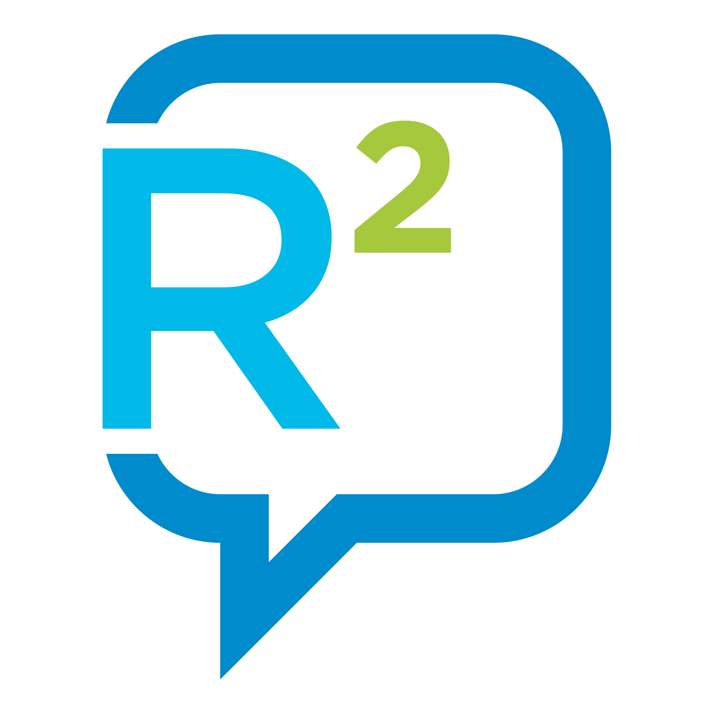

What is Ricochet Refresh?
Ricochet is an open-source project to allow private and anonymous instant messaging. It is
- metadata-resistant: nobody knows who you talk to or what you say
- anonymous: none of your contacts know your location or IP address
- decentralised: there are no servers to trust, monitor, or hack
- easy-to-use: your messages are automatically secure and private
Ricochet was launched in 2014 as a different approach to instant messaging that doesn’t trust anyone in protecting your privacy.
Unfortunately, Ricochet has not been updated since late 2016 and is starting to show its age. Ricochet Refresh is an initiative backed by Blueprint for Free Speech, a not-for-profit non-government organisation, to bring Ricochet into 2019 and beyond.
We believe software like Ricochet is important to protect freedom of expression for whistleblowers, activists, and journalists worldwide.
Releases
Mac OS X
Ricochet Refresh now has a pre-release for Mac OS X. We have included the latest version of Tor 0.3.5.8 in the pre-release.Installation instructions
-
Download Ricochet Refresh pre-release 1.1.4e for MacOS
- Click the downloaded
.dmgfile when it appears. - Drag the icon  into your
Applicationsfolder.

Linux
Ricochet Refresh now has a pre-release for Linux, tested on Ubuntu 18.04. We have included the latest version of Tor 0.3.5.8 in the pre-release.Installation instructions
-
Download Ricochet Refresh pre-release 1.1.4e for Linux
- Extract the archive, and run the Ricochet Refresh binary.
Windows
Releases for Windows are on their way. Check back later for updates!Get Involved
Refreshing Ricochet is a big project and we can't do this alone. If you're an open source developer, we want you to help us continue to update and improve Ricochet Refresh.
You can contribute to our GitHub repository, whether that's with code, by alerting us to bugs you've found, or your suggestions for new features.
Alternatively, if you want to volunteer your time in another way, please contact us.
About Blueprint
To ensure these fundamental rights are upheld, we seek a world where protections for free and independent media, freedom of speech, freedom of information, institutional transparency, and support for whistleblowers, are all enshrined in law.
Contact Us
Contact the team on Twitter: @r2refresh
More information about Blueprint can be found at our website blueprintforfreespeech.net.
This website is maintained by Eleanor McMurtry; you can reach them at eleanor@blueprintforfreespeech.net. The repository for this website is also on GitHub.